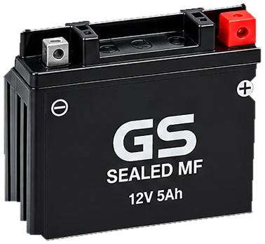
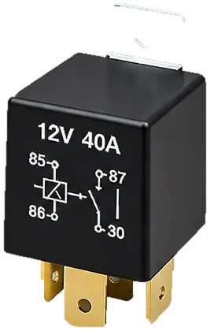
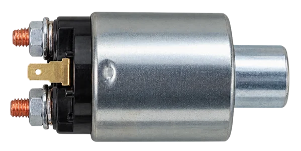
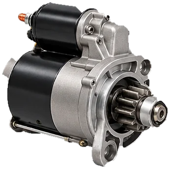

Pahami. Ukur. Diagnosis.
Laboratorium virtual sistem starter kendaraan
Media belajar interaktif untuk memahami cara kerja sistem starter secara visual dan bertahap. Berlatih mengoperasikan, mengukur, dan mendiagnosis kerusakan dengan aman, tanpa risiko pada kendaraan sesungguhnya.
- LihatJelajahi komponen di 3D Lab
- OperasikanJalankan simulator rangkaian
- UkurGunakan multimeter virtual
- DiagnosisTemukan penyebab kerusakan



